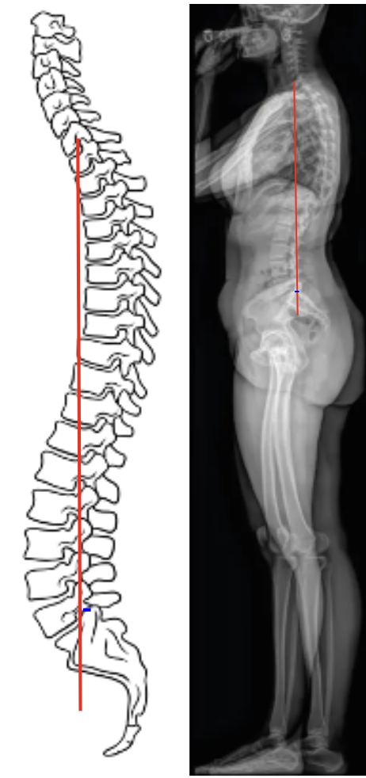

1) Description of Measurement
The Sagittal Vertical Axis (SVA) is the most widely used radiographic parameter to evaluate global sagittal balance.
It measures the horizontal offset between the C7 vertebral body plumb line and the posterior–superior corner of the sacrum (S1) on a standing lateral full-length spine X-ray.
SVA represents the anterior or posterior translation of the thoracic cage and head relative to the pelvis and is a key determinant of posture, energy expenditure, and compensatory mechanisms in spinal deformity.
An increased anterior SVA (positive balance) indicates forward sagittal malalignment, often associated with degenerative kyphosis, flat-back deformity, or postural imbalance.
2) Instructions to Measure
3) Normal vs. Pathologic Ranges
4) Important References
Schwab F, Lafage V, Boyce R, Skalli W, Farcy JP. Gravity line analysis in adult volunteers: age-related correlation with spinal parameters, pelvic parameters, and foot position. Spine. 2006;31(25):E959–E967.
Glassman SD, Bridwell K, Dimar JR, Horton W, Berven S, Schwab F. The impact of positive sagittal balance in adult spinal deformity. Spine. 2005;30(18):2024–2029.
Lafage V, Schwab F, Skalli W, et al. Standing balance and alignment in adult spinal deformity: analysis of spinopelvic and gravity line parameters. Spine. 2008;33(14):1572–1578.
Le Huec JC, Roussouly P, Aunoble S, et al. Sagittal balance of the spine. Eur Spine J. 2011;20(Suppl 5):724–728.
5) Other info....
SVA integrates head, spine, and pelvic orientation into a single index of global alignment and is a strong predictor of postoperative satisfaction and function.
Positive sagittal imbalance leads to compensatory mechanisms such as pelvic retroversion, knee flexion, and ankle dorsiflexion to maintain horizontal gaze.
Age and spinal degeneration naturally increase SVA due to loss of lumbar lordosis and thoracic hyperkyphosis.
SVA > 50 mm is considered a threshold for clinical deformity correction in most surgical planning algorithms (e.g., Schwab classification for adult spinal deformity).
Negative SVA is uncommon but may occur after overcorrection during fusion surgery or in exaggerated lordosis.
When documenting, specify the reference points (C7–S1) and units (mm or cm) and correlate findings with pelvic incidence–lumbar lordosis (PI–LL) mismatch and thoracic kyphosis to describe the patient’s full sagittal profile.